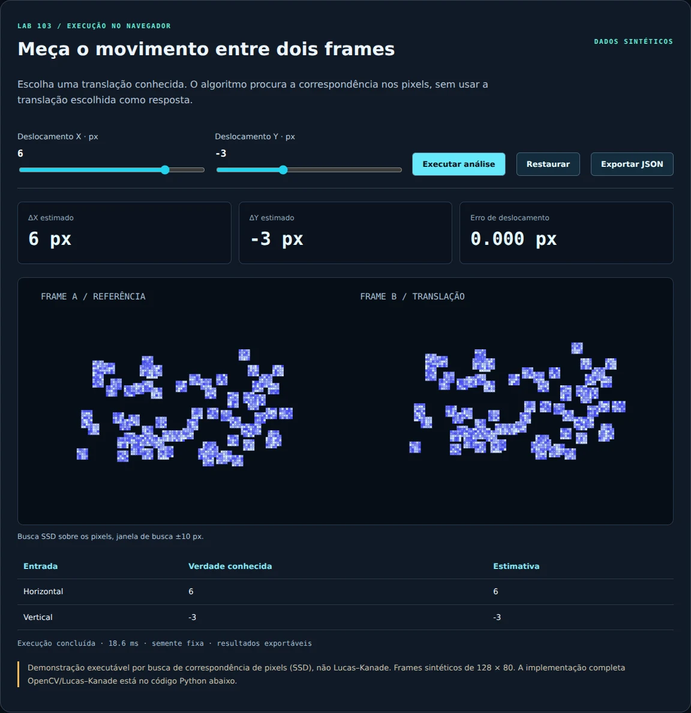

MOTORSPORT / 103 / EVIDÊNCIAS
Visão computacional / aquisição onboard
Fonte necessária
FastF1 e OpenF1 não distribuem frames de vídeo onboard. O rastreamento óptico exige um vídeo autorizado, metadados de câmera e calibração. A demonstração com imagens geradas foi desativada.
Sem dados adequados disponíveis para executar esta análise.
Consultar modelos com dados reais da F1 ↗
Arquivo visual anterior — dados sintéticos, não representa aquisição real
